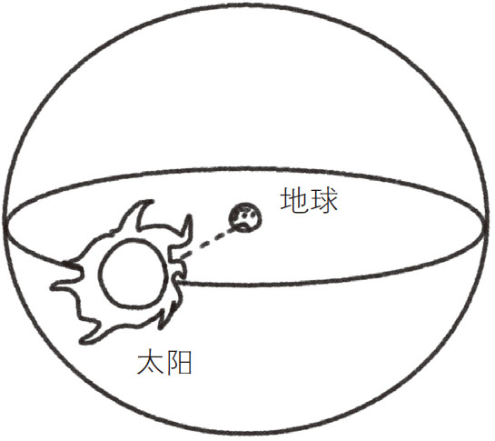

不可思议的大数自古以来就吸引着人们的好奇心。古希腊数学家阿基米德在他的著作《数沙者》（The Sand Reckoner ）中，曾计算出填满整个宇宙需要的沙粒数量。据阿基米德的结论，共需要1063 粒，这是一个1后面有63个0的超级大的数。
值得注意的是，阿基米德眼中的“宇宙”与我们现在所知的宇宙在概念上是不同的。当时的主流学说是“地心说”，认为太阳、月亮和其他星球都是绕着地球转动的。所以，阿基米德所谓的宇宙是指以地球到太阳的距离为半径的球体空间，他计算的正是要填满这个空间所需的沙粒数 。他的目的是告诉当时的国王，也就是亥尼洛，虽然填满宇宙需要的沙粒数是一个超级大的数，但也是可以计算的。而亥尼洛的观点是宇宙中可以放入无数颗沙粒。

图4-1 阿基米德眼中的宇宙
阿基米德参考了当时的天文学说，推测地球到太阳的距离不足100亿斯塔迪亚（斯塔迪亚是古希腊长度单位，100亿斯塔迪亚约等于18亿千米）。现在我们知道，地球到太阳的距离是1亿4960万千米，所以阿基米德的推测也算不错了。在那个连望远镜都没有、信息匮乏的年代，能将误差控制在10倍左右，已经十分不容易了。不仅如此，他还计算出如果用半径为18μm（微米）左右的沙粒填满宇宙，共需要约1063 粒。
阿基米德特别喜欢大数，虽然当时最大的计数单位是“亿”，但他还在研究更大的计数单位。如果换成用现代计数单位表示的话，阿基米德当时研究的最大的数是“1亿的1京次方”，也就是1后面加8京个零表示的数，这是一个无比巨大的数，即使在科技发达的今天也很难遇到。但是，越是这种看起来没什么用处的大数，阿基米德越是有兴趣研究。
在自然科学和数学领域中，不断地有令人难以置信的大数出现。在化学领域的计算中，经常会用到阿伏伽德罗常数 。阿伏伽德罗常数表示的是12克碳中包含的碳原子个数 ，大约为6.022×1023 个，也就是差不多6000垓个。根据英国天文学家亚瑟·斯坦利·爱丁顿 的推测，宇宙中的质子总数约为136×2256 个（约1079 个），这是一个比无量（1068 ）还要多11位的超级大的数。
麻省理工学院的迈克斯·泰格马克教授 认为，在距离地球10的“10的118次方”次方米的地方，有一个跟地球一模一样的星球，上面住着跟我们一模一样的人。不要以为这是一个玩笑，它是以物理学为基础提出的假说。所有物质都是由原子构成的，而原子排列方式的不同造就了人的不同。但原子的排列方式是有限的，而且宇宙那么大，完全有可能存在跟我们的排列方式相同的物质 。按照泰格马克教授的说法，在10的“10的118次方”次方米之外，能就找到我们的翻版。这个1后面有10118 个零的数，如果不用科学计数法记录，在这本书里都写不完。不仅如此，就算将全世界的墨水都用完，可能也无法将它写全。
目前为止讲到的数，都是有一定意义的。但是，也存在一些没有实际意义的数，它们就是根据理论提出的超级大的数，如“古戈尔（googol） ”。古戈尔在数值上等于10的100次方，即1后面有100个零，用普通计数法书写如下：
10 000 000 000 000 000 000 000 000 000 000 000 000 000 000 000 000 000 000 000 000 000 000 000 000 000 000 000 000 000 000 000 000 000.
人们将10的1古戈尔次方，即10的10100 次方称为“古戈尔普勒克斯（googolplex）” 。古戈尔和古戈尔普勒克斯对数学和自然科学既没有特别的意义，也没有特别的用途，只不过因为它们比较好记、名字听起来比较酷而广为人知。但是，它可以作为认知超级大的数的一个比较基准。例如，“一个粒子的质量”与“所有能观测到的宇宙物质的质量总和”之比，大约为100亿分之1古戈尔。前文讲到的泰格马克教授提出的另一个地球的最远距离是10的“1018 古戈尔”次方米，也可以说成10的100京古戈尔次方米。
古戈尔一词是由美国数学家爱德华·卡斯纳 九岁的侄子米尔顿·西罗蒂 提出的。当时，卡斯纳想提高孩子们对数学的兴趣，就让他们为10的100次方这个数取一个令人印象深刻的名字。在卡斯纳的著作《数学和想象》（Mathematics and the Imagination ）中，记录了这个故事：
孩子们的思维远比科学家们的思维更有发散性。我在向孩子们征集10的100次方这个超级大的数的名字的时候，我九岁的侄子西罗蒂当即认为，这个数不是无限大的，它的确应该有自己的名字。随后，西罗蒂给这个数字取名“古戈尔 ”，还根据古戈尔派生出了“古戈尔普勒克斯 ”作为更大的数的名字。在我的侄子看来，古戈尔普勒克斯就是1后面有“写到手酸”个0的超级大的数。但是，究竟写到手酸时能写多少个0，是因人而异的。因此，我们还是应该给古戈尔普勒克斯一个准确的定义。于是，1后面有1古戈尔个零的数字就是“古戈尔普勒克斯”了。这个数如此之大，就算两个0之间仅隔1英寸，写到宇宙的尽头也写不完吧。
据说，IT行业巨头谷歌（Google）公司的名称来自对古戈尔（googol）一词的错误拼写。谷歌创始人拉里·佩奇和谢尔盖·布林开发的搜索引擎最初名为“BackRub”（网络爬虫）。1997年9月，拉里和同事们计划为这个搜索引擎取一个新名字。他一边在白板上记录着大家想出的名字，一边试图想出一个更好的、与“海量数据索引”这个功能相关的名字。这时，一位名叫肖恩·安德森的同事说：“googolplex（古戈尔普勒克斯）这个名字怎么样？”（代表在互联网上可以获得的海量资源）拉里听了觉得还不错，但是有些长，就说：“还是叫googol（古戈尔）吧。”当时肖恩正坐在电脑前面，听到拉里的话立刻在互联网域名注册数据库中进行检索，查看这个新名字是否被注册或使用过。但是，肖恩犯了一个严重的错误，他在搜索时写成了“google.com”，并且发现这个域名可以使用。而拉里十分喜欢这个名字，于是“google.com”就成了谷歌的域名。
顺便说一下，谷歌总部位于美国加州圣克拉拉县的山景市，这座城市有着古戈尔普勒克斯之称。想不到，一位九岁男孩提出的金点子竟然经数学家之手变得家喻户晓，甚至成为IT巨头的公司名，或许这可以算是某种意义上的美国梦吧。